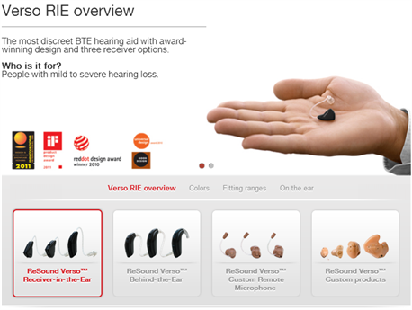
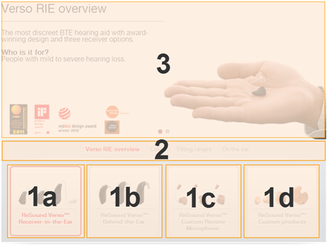
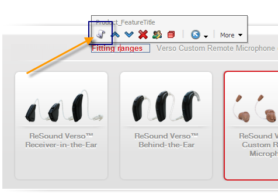
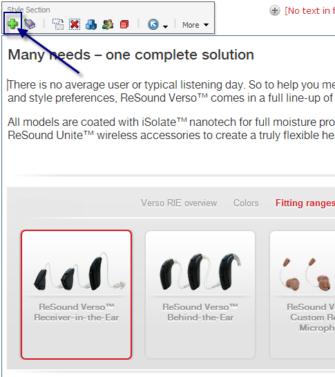
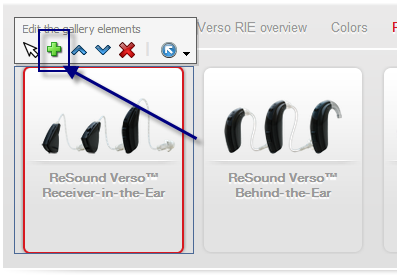

The style selector is used to display the different styles of a product line.
The spot consists of 3 areas, as seen on image 2.
If you want to edit a subtab under e.g. 1b, it is not enough to just click on 1b. This will only activate 1b, but not show subtabs for 1b. If you want the subtabs to be visible, hold down "CTRL" on your keyboard and click on 1b. You will now see the subtabs for the selected tab.

1: Tabs. The spots consist of tabs. You can create from 1-5 tabs. In every tab you create subtabs.
2: Subtabs. Subtabs have more or less the same function as the tabs. It is merely a way to subcategorize.
3: Spot container. In every tab, under every subtab, you will find a spot container. You can add any sort, and any number, of spot types here. The banner spot is the most common spot to use here, though.

When in edit mode you won't see the spots for the style selector. What you do is simply click on the subtab where you want to edit or add a spot, then click "edit panel spots". This will open a new window where you can insert spots, just like you normally would.

If you want to add a new tab simply click on the style selector (click a blank area within the style selector), then click the + button.

Adding a subtab follows a similar procedure. Hold down CTRL and click on a tab, then click the + button.
